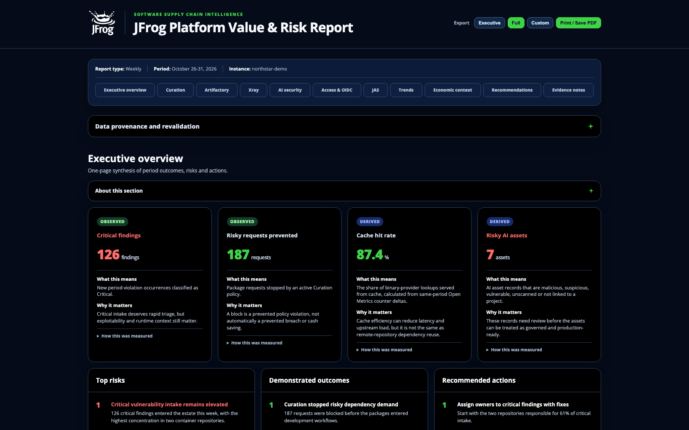

Comparable weekly evidence
Validated archives create week-over-week trends without reconstructing history from current inventory.
Collect fresh, read-only evidence. Preserve what happened. Separate observed results, derived metrics, external benchmarks and unavailable data.

Product consoles help teams operate each JFrog capability. Leadership needs a time-bounded record that connects platform adoption, preventive controls, current risk, trend and accountable action.
Validated archives create week-over-week trends without reconstructing history from current inventory.
Every value carries a classification, source, formula and period boundary.
Recommendations connect report evidence to a 7-day or 30-day operating decision.
The report works for Artifactory-only environments and adds optional modules when supported evidence is available.
Repositories, storage, uploads, downloads, traffic deltas and cache efficiency.
New findings, severity, coverage, exploitability and fix availability.
Criticality, maturity, ownership, release stages, promotions and verified evidence.
Requests evaluated, blocks, unique users, packages, policies and waivers.
MCP servers, skills, plugins and models with scan state, risk and project attribution.
Token rotation windows, non-expiring credentials and workload trust mappings.
Running images, applicable risk, malicious packages and integrity signals.
APM is the recommended pinned installation. Complete the operating-system prerequisites first so the agent, JFrog CLI and report scripts share one environment.
Install Python 3.11 or later, Git, JFrog CLI and APM with Homebrew.
brew install python git jfrog-cli apmpython3 --version
git --version
jf --version
apm --version
jf config add
jf config showRun every command inside WSL so the agent and JFrog CLI use the same Linux environment.
sudo apt update
sudo apt install -y git python3 python3-venv curl
curl -fL https://install-cli.jfrog.io | sh
curl -sSL https://aka.ms/apm-unix | sh
exec "$SHELL" -ljf config add
jf config showThe report depends on the base JFrog Platform Skill. Install the official JFrog plugin for the agent that will generate reports.
codex plugin marketplace add jfrog/codex-plugin
codex plugin add jfrog@codex-pluginStart claude, open the plugin manager, and install jfrog@claude-plugins-official. Follow the official host-specific JFrog plugin instructions for other agents.
Use only the targets installed on your machine.
mkdir -p ~/jfrog-platform-reporting
cd ~/jfrog-platform-reporting
apm init -yapm install liquid-jedi/jfrog-platform-report-skills#v1.6.0 \
--target claude,cursor,codex,gemini
apm deps list
apm auditThe liquid-jedi/... value is the public GitHub package coordinate, not a JFrog server or customer instance.
claudecodexOpen the folder in Cursor and start Agent chat, or run gemini for Gemini CLI.
After the agent starts, enter:
Generate weekly JFrog Platform reportNaming JFrog makes routing specific when an agent has several reporting Skills. This prompt is independent of APM and the alternative npx installation method.
jf config show. Public examples use production and staging. Answer with the intended production instance number.~/jfrog-platform-reports unless the organization requires a shared path.Y.This is separate from APM and requires Node.js. Install first, then start the agent and use the invocation prompt above.
npx skills add \
git@github.com:liquid-jedi/jfrog-platform-report-skills.git \
-g --skill jfrog-platform-reportRun the commands from the directory containing apm.yml. Upgrade examples contain no JFrog server or customer instance names.
apm updateapm deps list
apm auditAdd this at the top level of apm.yml. Remove agents where the skill should not be deployed.
targets:
- claude
- codex
- cursor
- geminiapm updateCommit apm.yml and apm.lock.yaml together for reproducible team installations.
The public example uses fictional names and values. It includes weekly trends, anonymized requester identities, fictional repositories, AI asset security states, token rotation planning and recommendations.
